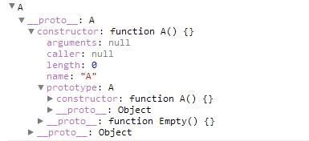
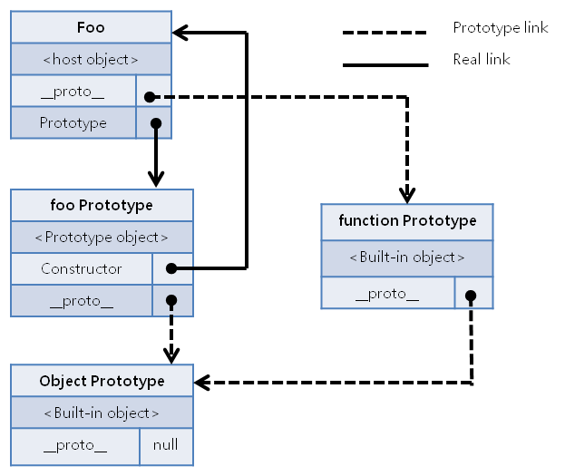
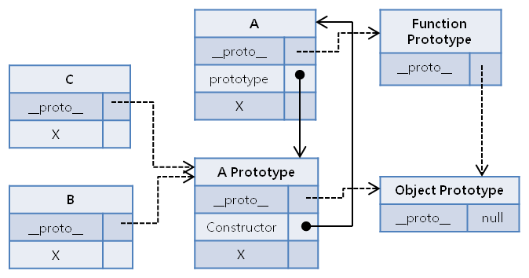
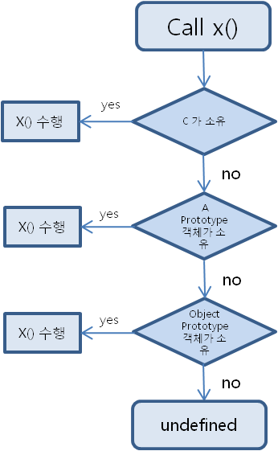
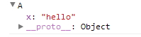

About Author

Insanehong
blog: http://insanehong.kr
twitter: @insanehong
github: insanehong.github.com
- NAVER Corporation, Front-End Engineer(2013~)
- Like Javascript, Dart, HTML5, CSS3,Responsive Web, Haroopress, Frends, Lean Startup, Open Source
- Hackrslab co-founder
- About me http://about.me/insanehong
About this Article
Date Released:
Tuesday, August 14 2012 5:02 PMJavascript 기초 - Object prototype 이해하기
소개
이번 글에서 다룰 내용은 자바스크립트의 프로토타입 상속(prototypal inheritance) 이라는 확장과 객체의 재사용을 가능하게 해주며 class 기반으로 인스턴스를 생성하지 않는 자바스크립트에서 객체지향적인 개발 개념을 가질수 있게 해주는 Prototype에 대한 내용이다.
하지만 일반적으로 자바스크립트에 대한 정공파가 아니면 제대로 이해하고 있지 않거나 이해 하기 힘든 부분이기도 하다.
그이유는 Prototype Object 와 Prototype Link을 제대로 구분하여 인지 하지 못하고 있기 때문일 것이다.
이번글을 통해서 자바스크립트에서 사용하는 프로토타입이란 녀석의 개념을 확실히 집고 넘어가 보도록 하겠다.
프로토타입기반 프로그래밍 이해하기
프로토타입 기반 프로그래밍 이란?
객체의 원형인 프로토타입을 이용하여 새로운 객체를 만들어내는 프로그래밍 기법이다. 이렇게 만들어진 객체 역시 자기자신의 프로토타입을 갖는다. 이 새로운 객체의 원형을 이용하면 또 다른 새로운 객체를 만들어 낼수도 있으며 이런 구조로 객체를 확장하는 방식을 프로토타입 기반 프로그래밍이라고 한다.
이 프로토타입 기반 프로그래밍은 Class 기반 OOP 언어를 다루던 사람에게는 이해가 잘 안가는 부분 일수도 있다. Class 기반의 언어에서는 Class 안에 기술된 내용을 기반으로 인스턴스를 생성하여 객체를 사용한다. 하지만 자바스크립트는 Class 가 존재하지 않는다. 그래서 자바스크립트에서는 객체의 원형인 프로토타입을 이용한 클로닝(Cloning: 복사)과 객체특성을 확장해 나가는 방식을 통해 새로운 객체를 생성해 낸다. 자바스크립트 응용에서 다룰 프로그래밍 패턴과 연관된 재밌는 사실중 하나는 자바스크립트의 프로토타입 객체의 확장은 옵져버패턴을 따른다. 지금으로서는 그다지 중요하게 알고 있을 필요는 없다. 하지만 이 연재를 계속 지켜본다면 후에 굉장히 신선한 내용으로 다가올 것이다.
자바스크립트에서 사용되는 프로토타입
var foo = {name : "foo"}; // foo 라는 객체를 생성.
foo.prototype.a='hello world';
console.log(foo.a);
지금 자신이 알고 있는 자바스크립트 프로토타입에 대한 지식만으로 위 코드의 결과를 추측해 보길 바란다. 어떤 결과를 예상했는지 모르겠지만 위 결과는 당연히 syntax error 이다.
적어도 이글을 읽고 있는 사람중 몇몇은 예상했던 결과와 코드 실행결과를 비교하면서 왜 그런지 이해하지 못할 것이라 생각한다.
그 이유는 극히 단순하다. 자바스크립트에서 말하는 프로토타입이란 말에 원천적인 의미와 실제 자바스크립트를 사용하면서 눈으로 보는 프로토타입이란 녀석과의 차이를 이해하지 못하기 때문이다.
자바스크립트에서 사용되는 프로토타입이란 용어는 크게 두가지로 나눈다. Prototype Property가 가리키고 있는 Prototype Object 와 자기 자신을 만들어낸 객체의 원형을 의미하는 Prototype Link 이다.
자바스크립트 관련 레퍼런스는 대부분 프로토타입에 대한 정의는 객체의 원형을 의미하는 Prototype Link 로 정의하지만 Prototype Property를 이용한 객체 확장에 대해서만 다루기 때문에 이 둘의 차이를 자세히 거론하지 않는다.
그런이유로 자바스크립트의 프로토타입을 공부하는 사람들은 Prototype Property가 자바스크립트에서 말하는 프로토타입이라고 이해하고 이를 사용한다.
하지만 이둘은 엄연히 틀린 의미이기 때문에 제대로 이해하고 있어야 한다.
자바스크립트의 프로토타입(Prototype) 란?
자바스크립트의 모든 객체는 자신을 생성한 객체 원형에 대한 숨겨진 연결을 갖는다. 이때 자기 자신을 생성하기 위해 사용된 객체원형을 프로토타입이란 한다. 자바스크립트의 모든 객체는 Object 객체의 프로토타입을 기반으로 확장 되었기때문에 이 연결의 끝은 Object 객체의 프로토타입 Object 다.
자명한 사실이다. 프로토타입이란 의미자체가 원형,원본이란 말이지 않은가. 자바스크립트에서 말하는 프로토타입 역시 문법적인 의미에서 벗어나지 않는다. 즉 어떠한 객체가 만들어지기 위해 그 객체의 모태가 되는 녀석을 프로토타입이라고 한다. Java나 php에서 말하는 class가 바로 자바스크립트의 프로토타입과 동일한 의미일 것이다.
function A() {};
var A = new A();
console.log(A);
위 예제는 new Operator 를 사용하여 A라는 객체 생성자를 이용한 새로운 객체를 생성하여 B라는 변수에 담는 코드이다. 그렇게 만들어진 객체를 console.log롤 찍어보면 아래와 같은 내용을 확인 할수 있다.

위 내용에서 주의깊게 봐야할 것이 있다. 바로 __proto__과 constructor 이다. __proto__ 바로 이 녀석이 A라는 객체를 만들어내기 위해 사용된 객체원형에 대한 숨겨진 연결이다.
해당객체의 프로토타입은 A라는 함수객체이며 이 객체의 생성자 역시 function A() 함수라는 것이다. 즉 new Operator를 통해 만들어진 객체는 function A() 를 자신의 프로토타입으로 사용하여 만들어졌다는 말이다.
하지만 역시 먼가 꺼림직하다 "내가 알고있는 프로토타입은 저게 아닌데?" 라고 생각하고 있을 것이다.
그 이유는 바로 당신이 알고 있는 프로토타입은 자신을 만들어낸 객체원형을 의미하는 것이 아니기 때문이다. 대부분의 자바스크립트 기초가 부족한 사람들이 말하는 프로토타입은 애석하게도 prototype 프로퍼티다.
자바스크립트의 프로토타입(Prototype) 프로퍼티 란?
모든 함수 객체의 Constructor는 prototype 이란 프로퍼티를 가지고 있다. 이 prototype 프로퍼티는 객체가 생성될 당시 만들어지는 객체 자신의 원형이될 prototype 객체를 가리킨다. 즉 자신을 만든 원형이 아닌 자신을 통해 만들어질 객체들이 원형으로 사용할 객체를 말한다. prototype object는 default로 empty Object 를 가리킨다.
이 말이 매우 어렵게 들릴수도 있다. 하지만 정확히 이해한다면 그리 어려운 말이 아니다. 위에서 분명히 프로토타입은 자기 자신을 생성하게 한 자신의 원형 객체라고 정의했다. 그럼 그 원형객체란 프로토타입은 function A() 함수객체 그 차체일가? 전혀 그렇지 않다.
자바스크립트의 모든 객체는 생성과 동시에 자기자신이 생성될 당시의 정보를 취한 Prototype Object 라는 새로운 객체를 Cloning 하여 만들어낸다. 프로토타입이 객체를 만들어내기위한 원형이라면 이 Prototype Object 는 자기 자신의 분신이며 자신을 원형으로 만들어질 다른 객체가 참조할 프로토타입이 된다.
즉 객체 자신을 이용할 다른 객체들이 프로토타입으로 사용할 객체가 Prototype Object 인 것이다. 즉 위에서 언급한 __proto__라는 prototype 에 대한 link는 상위에서 물려받은 객체의 프로토타입에 대한 정보이며 prototype 프로퍼티는 자신을 원형으로 만들어질 새로운 객체들 즉 하위로 물려줄 연결에 대한 속성이다.
function foo() {}
var foo = new foo();
위 예제코드를 통해 만들어지는 Prototype Link 와 Prototype Property가 가리키는 Prototype Object의 Real Link 에 대한 관계도는 다음과 같다. 
위 관계도에서 알수 있듯 모든 객체의 확장은 객체가 소유한 prototype Object를 통해 이루어지며 이 연결의 끝은 이전 글에서 소개한 Object 객체의 prototype Object 가 된다.
일반적으로 자바스크립트 코드를 통해 다루는 prototype이 객체가 소유한 자기자신의 prototype Object 이기 때문에 대부분의 자바스크립트 입문자는 프로토타입이란 것을 prototype property라고 생각하게 되는 오류를 범하게 되는 것이다.
자 이제 자바스크립트 프로토타입에 대한 이해가 부족한 사람 혹은 자바스크립트 입문자들이 가장 햇갈려하는 부분에 대하여 알아보도록 하겠다.
function foo(x) {
this.x = x;
};
var A = new foo('hello');
console.log(A.x);
> hello
console.log(A.prototype.x)
> syntax error
엇! 소리가 나올 듯하다. 하지만 이것은 당연한 결과이다. **prototype 프로퍼티는 Constructor가 가지는 프로퍼티** 이다. 그리고 *함수객체만 이 프로퍼티를 가지고 있다고 했다.
* A객체는 함수객체가 아니다. foo 라는 원형을 이용하여 함수객체를 통해 만들어진 Object 객체에 확장된 단일 객체일 뿐이다. 즉 A는 prototype 프로퍼티를 소유하고 있지 않기에 A.prototype.x가 syntax error 인 것이다.
즉 프로토타입을 이해하려면 foo.prototype.x 는 OK, A.prototype.x 는 error 라는 사실을 반드시 이해하고 기억하고 있어야 한다.
지금까지 내용을 바탕으로 아래의 코드의 결과를 생각해 보도록 하자.
//#예제 1.
var A = function () {
this.x = function () {
//do something
};
};
//#예제 2.
var A = function () { };
A.prototype.x = function () {
//do something
};
지금까지 내용을 잘 이해하고 있다면 예제1의 this.x 는 A의 프로퍼티 x 이고, 예제2 는 A의 prototype Object 에 연결된 x 라는 것을 이해 할 수 있을것이다. 그럼 왜 굳이 prototype 을 사용하여야 하는가? 이 문제는 객체를 어떻게 사용 할 것인가에 따라 다르게 된다.
//#예제 1.
var A = function () {
this.x = function () {
console.log('hello');
};
};
A.x=function() {
console.log('world');
};
var B = new A();
var C = new A();
B.x();
> hello
C.x();
> hello
//#예제 2.
var A = function () { };
A.x=function() {
console.log('hello');
};
A.prototype.x = function () {
console.log('world');
};
var B = new A();
var C = new A();
B.x();
> world
C.x();
> world
예제1, 예제2 에서 B,C 를 생성하기 위한 객체 원형 프로토타입은 A 이다. 하지만 여기서 반드시 집고 넘어가야하는 사실은 B,C는 A 를 프로토타입으로 사용하기위해서 A의 prototype Object를 사용한다는 것이다. 그리고 이 Prototype Object는 A 가 생성될 당시의 정보만을 가지기 때문에 예제1에서 A의 Prototype Object가 알고 있는 x 는 function () {console.log('hello');} 가 된다. 즉 A.x 를 아무리 수정하여도 A의 Prototype Object는 변경되지 않기 때문에 A 를 프로토타입으로 생성되는 B,C는 function () {console.log('hello');} 만 참조하는 것이다.
예제2 에서의 결과가 world 가 되는 이유도 같은 이유다. A.prototype 은 A의 Prototype Object를 참조하는 녀석이기 때문에 A.prototype.x 를 정의한다는 것은 A의 Prototype Object를 직접 이용하게 되는 것이고 그에 따라서 A의 Prototype Object를 프로토타입으로 이용하여 만들어지는 B,C 가 알고 있는 x 는 function () {console.log('world');} 가 되는 것이다.
예제2의 객체 상속 모델을 그림으로 표현하면 아래와 같이 나온다. 
자바스크립트의 프로토타입 체인(Prototype Chain)
객체의 생성 과정에서 모태가 되는 프로토타입과의 연결고리가 이어져 상속관계를 통하여 상위 프로토타입으로 연속해서 이어지는 관계를
프로토타입 체인이라고 한다. 이 연결은__proto__를 따라 올라가게 된다.
즉 프로토타입 체인이란 위에서 봤던 프로토타입을 상속해서 만들어지는 객체들관의 연관관계를 의미한다. 그림에서 __proto__ 프로퍼티들간 이어진 점선을 타고 가다보면 최종적으로 Object 객체의 prototype Object에 다다르는 것을 알수 있다.
그렇기 때문에 자바스크립트의 모든 객체는 Object 객체에서부터 파생되어 나온 자식들이라고 하는 것이다.
이러한 프로토타입 체인은 하위 객체에서 상위객체의 프로퍼티와 메소드를 상속받는다. 그리고 동일한 이름의 프로퍼티와 메소드를 재정의 하지 않는 이상 상위에서 정의한 내용을 그대로 물려받는다. 하지만 여기에는 엄청난 꼼수가 숨어있다. 사실 꼼수라는 표현이 좀 애매하긴 하지만 위 그림을 잘 보면 B와 C 는 A prototype Object를 프로토타입으로 만들어졌음에도 불구하고 X 라는 프로퍼티가 존재하지 않는다. 사실 "물려 받는다" 라는 말 자체가 꼼수인 것이다. 즉** 하위 객체는 상위 객체의 속성과 메소드를 상속 받는 것이 아니라 그것을 공유**하고 있는 것이다.
var A = function () { };
A.prototype.x = function () {
console.log('hello');
};
var B = new A();
var C = new A();
B.x();
> hello
C.x();
> hello
A.prototype.x = function () {
console.log('world');
};
B.x();
> world
C.x();
> world
위 예제에서 A의 Prototype Object의 x 메소드를 재정의 하였을 때 B,C객체도 그 영향을 받는다는 것을 알 수 있다. 그 이유는 프로토타입 체인에 의한 공유 때문이다. 아래의 그림을 잘 봐보기 바란다.

이전에 소개했던 그림과 비슷하다. 그러니 프로토타입 상속에 대한 구조 이해는 가능하리라 믿는다. 여기서 유심히 봐야할것은 A Prototype Object 가 소유한 Constructor 다. A Prototype Object의 Constructor는 A 객체의 생성자 함수이다.
즉 이를 통해 만들어지는 객체들은 A 객체가 생성될 당시 소유하고 있지 않은 x 라는 메소드를 가질수 없다. x는 A.prototype 를 이용하여 A Prototype Object에 추가 되어진 메소드다.
하지만 이 x 메소드는 프로토타입 체인에 의한 공유 메소드다. A의 Prototype Object 가 소유한 x 라는 메소드는 A Prototype Object를 프로토타입으로 만들어진 모든 객체에서 사용할 수 있다.
이는 프로토타입 기반 상속에서 매우 중요한 특성을 말하고 있다.
위 예제에서 사용한 x 라는 메소드를 하위객체에서 찾지 못하면 상위객체에서 해당 메소드를 탐색한다. 이러 방법으로 프로토타입 체인을 따라 최상위 객체까지 도달할때까지 해당 메소드를 찾지 못한다면 undefined 이 되는 것이다.

하지만 A 객체가 생성당시 x 라는 메소드 혹은 의미있는 프로퍼티에 대한 정의가 포함된 내용을 가지고 있다면 이들은 공유가 아닌 상속된다.
var A= function() {};
var B = new A();
A.prototype.x='hello';
console.log(B);
var A= function() {this.x='hello';};
var B = new A();
console.log(B);

이처럼 공유와 상속의 구분을 정확히 이해하고 사용하는 것은 매우 중요하다. 이들을 햇갈리게 되면 후에 프로토타입 재정의에 따른 원하지 않는 참혹한 결과를 가져다 줄수도 있기 때문이다.
갈무리
프로토타입에 대한 제대로된 이해를 한다는 것은 결국 자바스크립트의 객체에 대한 이해를 하는 것과 동일하다고 생각한다. 이 글을 쓰면서도 이 주제를 어떻게 풀어야할지 많은 고민을 했었다. 그만큼 개념적으로 다가서기가 좀 까다로운 부분이기도 했다. 하지만 내가 아는 범위내에서는 모두 풀어냈다고 보고 이글을 보고도 이해가 잘안된다면 더 많은 레퍼런스를 참고하기 바란다. 참고할만한 레퍼런스는 이글 끝에 추가 하도록 하겠다. 이로서 미루고 미루고 미뤄왔던 프로토타입에 대한 글을 마무리하고 다음 주제는 function 객체 외 다수의 객체들에 대하여 알아볼것이라는 떡밥을 던지며 마무리 한다.